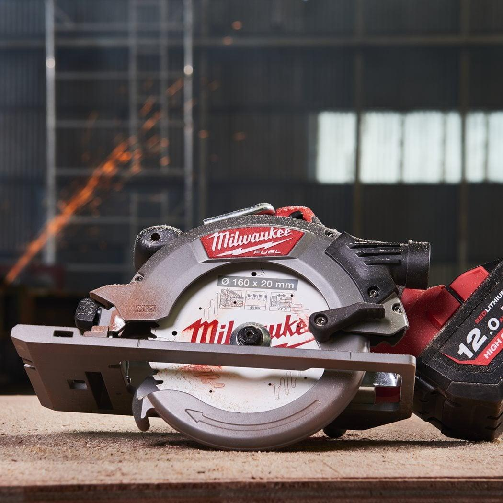
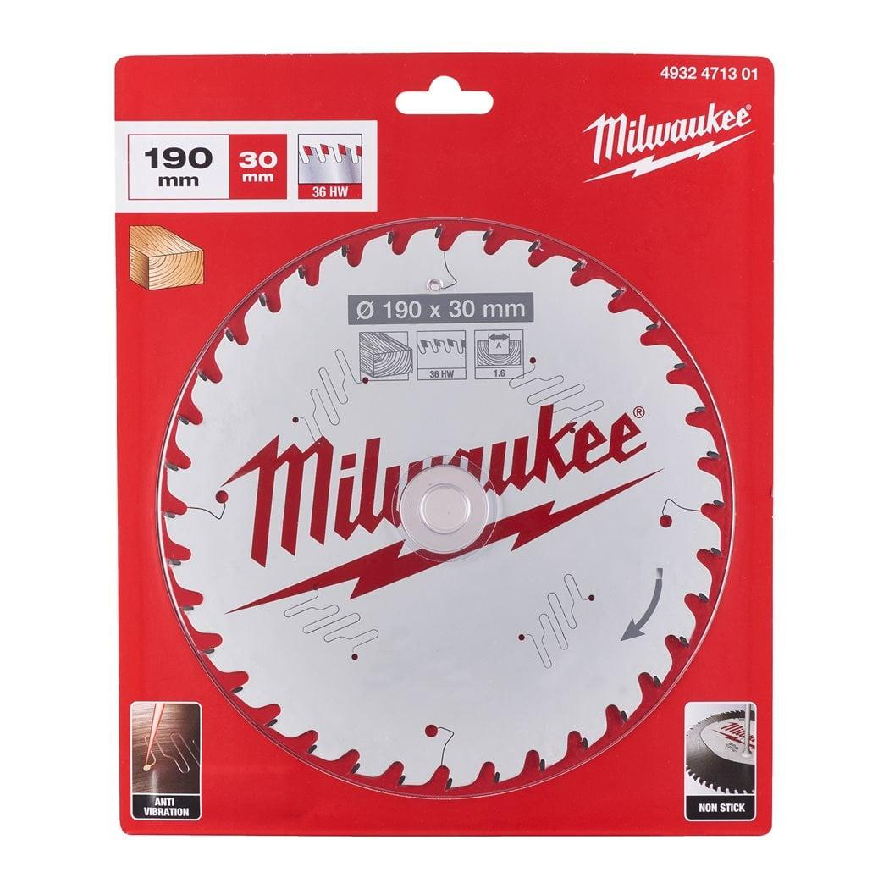
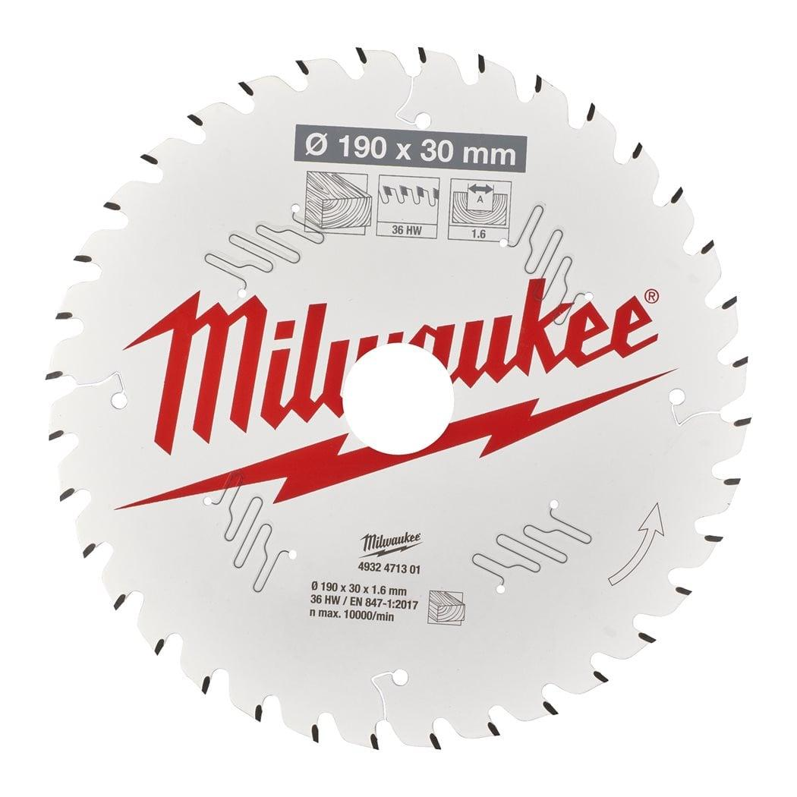

4932471301



| All Wood Types | ✔ |
| Blade diameter (mm) | 190 |
| Bore size (mm) | 30 |
| Cutting width (kerf) (mm) | 1.6 |
| Hook Angle | +15° |
| Materials suited for | Wood with nails & screws|Green wood|Wood|Particleboard, Fibrecement board, Fibreglass |
| No. of teeth | 36 |
| Pack quantity | 1 |
| Thin Kerf | ✔ |
| Tooth Form | ATB |